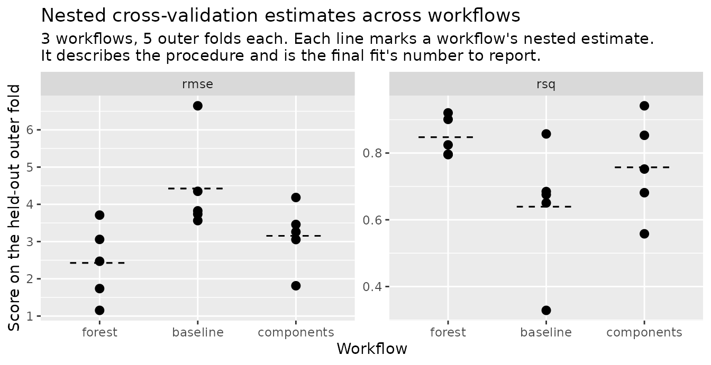
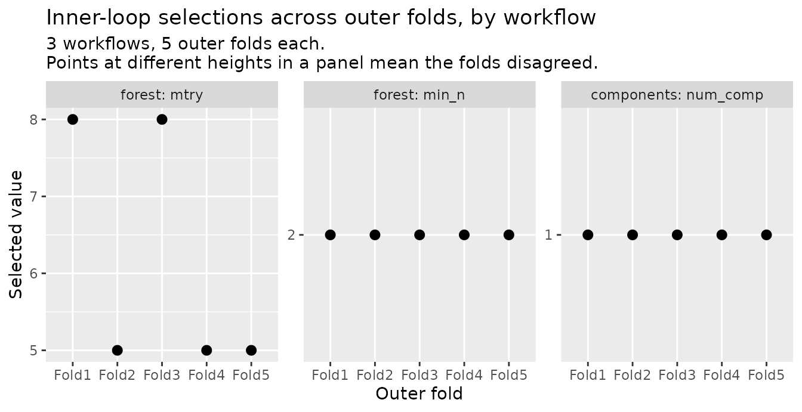

You want the inner search to run some other way than over a fixed
grid, or to score a workflow with nothing to tune. The getting-started
guide, vignette("nested-cv"), tunes each outer fold over a
fixed grid with nested_tune_grid(). That is one of five
ways the inner search can run. The other four are tune’s Bayesian
optimization, finetune’s two racing methods, and finetune’s simulated
annealing. Each has a function in this package that takes the same
design and workflow and returns the same kind of object. This page runs
all four on the guide’s example and shows what each fold records about
its search. It then scores a workflow with nothing to tune on the same
folds. Last, it runs a baseline and two tuned workflows through one
design in one call with nested_workflow_map().
The design and the workflow
These are the guide’s, unchanged: five outer folds of
mtcars, five inner folds under each, and a random forest
with two parameters marked for tuning.
set.seed(1)
folds <- nested_resamples(
mtcars,
outside = vfold_cv(v = 5),
inside = vfold_cv(v = 5)
)
rf <- rand_forest(mtry = tune(), min_n = tune(), trees = 500) |>
set_engine("ranger") |>
set_mode("regression")
wf <- workflow(mpg ~ ., rf)
grid <- expand.grid(mtry = c(2L, 5L, 8L), min_n = c(2L, 10L))The grid tuner and the racers score the candidates they are given,
the settings in the grid. The Bayesian and annealing searches propose
their own candidates, and to do that they need each parameter’s range.
The default range of mtry is not known until the data is
seen, so a search over it fails at inner tuning in every fold. The
parameter set below fixes that range by hand. It also bounds
min_n to the grid’s range, because its default runs past
the size of an inner analysis set here.
Bayesian optimization
nested_tune_bayes() runs tune::tune_bayes()
inside each outer fold. The search starts from a small space-filling set
of candidates and scores them on the inner resamples. It then proposes
one new candidate per iteration, from a Gaussian process fitted to the
scores so far. initial and iter are the sizes
of those two stages, kept small here so the page builds quickly.
set.seed(2)
bayes <- nested_tune_bayes(
wf,
folds,
param_info = params,
initial = 4,
iter = 3
)
bayes
#> ── Nested cross-validation results ────────────────────────────────────
#> Outer resamples: 5-fold cross-validation
#> # A tibble: 5 × 9
#> splits id .metrics .selected .inner_metrics .notes
#> <list> <chr> <list> <list> <list> <list>
#> 1 <split [25/7]> Fold1 <tibble> <tibble> <tibble [14 × 9]> <tibble>
#> 2 <split [25/7]> Fold2 <tibble> <tibble> <tibble [14 × 9]> <tibble>
#> 3 <split [26/6]> Fold3 <tibble> <tibble> <tibble [14 × 9]> <tibble>
#> 4 <split [26/6]> Fold4 <tibble> <tibble> <tibble [14 × 9]> <tibble>
#> 5 <split [26/6]> Fold5 <tibble> <tibble> <tibble [14 × 9]> <tibble>
#> # ℹ 3 more variables: .completed <lgl>, .tuning_seed <int>,
#> # .outer_fit_seed <int>
#> ! Candidates searched: 7, 7, 7, 7, 7. The folds did not search the
#> same grid
#> ℹ Use `summary()` for what the run means: which folds failed, what
#> each one selected, and the estimate across them.The print notes that the folds did not search the same grid. Each fold scored the same number of candidates, but not the same ones, because each fold proposes candidates from its own scores. With a grid, every fold picks from the same list, so you can count how many folds chose each candidate. Here the folds did not all see the same list, and the note says so.
The guide multiplied outer folds by inner resamples by grid rows to
count fits. Here the same count uses initial + iter
candidates per fold in place of the grid’s rows.
.inner_metrics holds what the search inside one fold
saw. Here is the first fold’s:
bayes$.inner_metrics[[1]]
#> # A tibble: 14 × 9
#> mtry min_n .metric .estimator mean n std_err .config .iter
#> <int> <int> <chr> <chr> <dbl> <int> <dbl> <chr> <int>
#> 1 2 4 rmse standard 2.88 5 0.453 pre0_mod1_… 0
#> 2 2 4 rsq standard 0.811 5 0.0970 pre0_mod1_… 0
#> 3 4 10 rmse standard 2.94 5 0.535 pre0_mod2_… 0
#> 4 4 10 rsq standard 0.790 5 0.118 pre0_mod2_… 0
#> 5 6 2 rmse standard 2.82 5 0.440 pre0_mod3_… 0
#> 6 6 2 rsq standard 0.839 5 0.0891 pre0_mod3_… 0
#> 7 8 7 rmse standard 2.83 5 0.445 pre0_mod4_… 0
#> 8 8 7 rsq standard 0.829 5 0.105 pre0_mod4_… 0
#> 9 5 6 rmse standard 2.83 5 0.451 iter1 1
#> 10 5 6 rsq standard 0.818 5 0.106 iter1 1
#> 11 6 5 rmse standard 2.83 5 0.458 iter2 2
#> 12 6 5 rsq standard 0.837 5 0.102 iter2 2
#> 13 3 10 rmse standard 2.99 5 0.515 iter3 3
#> 14 3 10 rsq standard 0.786 5 0.117 iter3 3The .iter column says which stage each candidate came
from. An .iter of 0 marks the initial set, and the
proposals run up to 3. A tune::control_bayes() passed as
control reaches the inner call in every fold. If the
control stops a fold’s search early, that fold’s .iter
values stop short of iter. ?nested_tune_bayes
says which of its slots this package sets for itself.
Racing
The two racing methods in finetune take the same grid the guide uses
and score every candidate on a few inner resamples first. After each
further resample, a candidate that is clearly worse than the current
best is dropped. That saves the fits a full grid search would spend on
losing candidates. nested_tune_race_anova() decides with a
repeated measures ANOVA fitted by lme4.
nested_tune_race_win_loss() decides with a Bradley-Terry
model of pairwise wins fitted by BradleyTerry2. Both refuse at entry
when a package their race needs is not installed.
set.seed(3)
race <- nested_tune_race_anova(wf, folds, grid = grid)
race
#>
#> ── Nested cross-validation results ────────────────────────────────────
#> Outer resamples: 5-fold cross-validation
#> # A tibble: 5 × 9
#> splits id .metrics .selected .inner_metrics .notes
#> <list> <chr> <list> <list> <list> <list>
#> 1 <split [25/7]> Fold1 <tibble> <tibble> <tibble [12 × 8]> <tibble>
#> 2 <split [25/7]> Fold2 <tibble> <tibble> <tibble [12 × 8]> <tibble>
#> 3 <split [26/6]> Fold3 <tibble> <tibble> <tibble [12 × 8]> <tibble>
#> 4 <split [26/6]> Fold4 <tibble> <tibble> <tibble [12 × 8]> <tibble>
#> 5 <split [26/6]> Fold5 <tibble> <tibble> <tibble [12 × 8]> <tibble>
#> # ℹ 3 more variables: .completed <lgl>, .tuning_seed <int>,
#> # .outer_fit_seed <int>
#> ℹ Use `summary()` for what the run means: which folds failed, what
#> each one selected, and the estimate across them.A race’s .inner_metrics looks complete but is not. Every
candidate in the grid has a row, yet the rows can rest on different
numbers of resamples. The n column says how many inner
resamples each candidate was scored on before it was dropped or the race
ended. collect_inner_metrics() stacks those tables with the
fold label beside them. So summing n over one metric’s rows
counts the fits each fold spent on tuning. The fold that spent the
fewest is the one where elimination did the most work:
fits_per_fold <- collect_inner_metrics(race) |>
filter(.metric == "rmse") |>
group_by(id) |>
summarise(fits = sum(n))
fits_per_fold
#> # A tibble: 5 × 2
#> id fits
#> <chr> <int>
#> 1 Fold1 30
#> 2 Fold2 30
#> 3 Fold3 23
#> 4 Fold4 29
#> 5 Fold5 30
cheapest <- slice_min(fits_per_fold, fits, n = 1, with_ties = FALSE)
collect_inner_metrics(race) |>
filter(id == cheapest$id)
#> # A tibble: 12 × 9
#> id mtry min_n .metric .estimator mean n std_err .config
#> <chr> <int> <int> <chr> <chr> <dbl> <int> <dbl> <chr>
#> 1 Fold3 2 2 rmse standard 2.37 4 0.393 pre0_mod1_…
#> 2 Fold3 2 2 rsq standard 0.918 4 0.0270 pre0_mod1_…
#> 3 Fold3 2 10 rmse standard 3.48 3 0.660 pre0_mod2_…
#> 4 Fold3 2 10 rsq standard 0.887 3 0.0657 pre0_mod2_…
#> 5 Fold3 5 2 rmse standard 2.23 5 0.327 pre0_mod3_…
#> 6 Fold3 5 2 rsq standard 0.911 5 0.0218 pre0_mod3_…
#> 7 Fold3 5 10 rmse standard 3.12 3 0.764 pre0_mod4_…
#> 8 Fold3 5 10 rsq standard 0.896 3 0.0515 pre0_mod4_…
#> 9 Fold3 8 2 rmse standard 2.27 5 0.313 pre0_mod5_…
#> 10 Fold3 8 2 rsq standard 0.903 5 0.0253 pre0_mod5_…
#> 11 Fold3 8 10 rmse standard 3.08 3 0.791 pre0_mod6_…
#> 12 Fold3 8 10 rsq standard 0.893 3 0.0468 pre0_mod6_…In Fold3, 4 of the 6 candidates show n
below the 5 inner resamples, so they were dropped before the race ended,
and the fold spent 23 fits on tuning where the full grid costs 30.
The win/loss race records the same table, and reads the same way. Its fits per fold:
set.seed(4)
win_loss <- nested_tune_race_win_loss(wf, folds, grid = grid)
collect_inner_metrics(win_loss) |>
filter(.metric == "rmse") |>
group_by(id) |>
summarise(fits = sum(n))
#> # A tibble: 5 × 2
#> id fits
#> <chr> <int>
#> 1 Fold1 30
#> 2 Fold2 30
#> 3 Fold3 30
#> 4 Fold4 28
#> 5 Fold5 30Simulated annealing
nested_tune_sim_anneal() runs
finetune::tune_sim_anneal() inside each outer fold. Like
the Bayesian search, it proposes its own candidates and needs the
parameter set above. Each proposal is a small random move from the
current candidate, accepted when it scores better and sometimes when it
scores worse. finetune prints a log of every move by default, and the
control passed below keeps the page quiet.
set.seed(5)
anneal <- nested_tune_sim_anneal(
wf,
folds,
param_info = params,
initial = 3,
iter = 3,
control = finetune::control_sim_anneal(verbose_iter = FALSE)
)
anneal$.inner_metrics[[1]]
#> # A tibble: 12 × 9
#> mtry min_n .metric .estimator mean n std_err .config .iter
#> <int> <int> <chr> <chr> <dbl> <int> <dbl> <chr> <int>
#> 1 2 10 rmse standard 3.05 5 0.550 initial_pr… 0
#> 2 2 10 rsq standard 0.777 5 0.119 initial_pr… 0
#> 3 5 2 rmse standard 2.83 5 0.458 initial_pr… 0
#> 4 5 2 rsq standard 0.842 5 0.0905 initial_pr… 0
#> 5 8 6 rmse standard 2.82 5 0.465 initial_pr… 0
#> 6 8 6 rsq standard 0.839 5 0.101 initial_pr… 0
#> 7 7 6 rmse standard 2.89 5 0.474 Iter1 1
#> 8 7 6 rsq standard 0.828 5 0.100 Iter1 1
#> 9 6 5 rmse standard 2.82 5 0.482 Iter2 2
#> 10 6 5 rsq standard 0.832 5 0.102 Iter2 2
#> 11 5 6 rmse standard 2.82 5 0.475 Iter3 3
#> 12 5 6 rsq standard 0.823 5 0.102 Iter3 3.iter runs from 0, the initial candidates, to 3.
Seeding is the same on all five. Seed the session before the call.
The same seed gives the same result serially and in parallel, as
vignette("nested-cv") explains under Reproducibility.
A workflow with nothing to tune
A tuned procedure, the whole resample-tune-select-fit sequence, is
usually compared with something simpler, such as the same model with its
parameters fixed. nested_fit_resamples() scores such a
workflow on the same nested design. It runs the same outer loop with the
inner stage removed. Each fold fits the workflow as given on its
analysis rows and scores it once on its assessment rows.
extract_procedure() on the result says no tuning ran. What
the shared design buys is that the two runs score on identical
folds.
fixed_rf <- rand_forest(mtry = 2L, min_n = 10L, trees = 500) |>
set_engine("ranger") |>
set_mode("regression")
set.seed(2)
baseline <- nested_fit_resamples(workflow(mpg ~ ., fixed_rf), folds)
extract_procedure(baseline)$tuner
#> [1] "fit_resamples"
collect_metrics(baseline)
#> # A tibble: 2 × 5
#> .metric .estimator mean n std_err
#> <chr> <chr> <dbl> <int> <dbl>
#> 1 rmse standard 2.75 5 0.576
#> 2 rsq standard 0.827 5 0.0274Every function that reads a tuned result reads the baseline the same
way, under the same control settings. The one exception is the
parameters plot, which has nothing to draw. The baseline’s
.selected column holds an empty table on every fold, since
nothing was chosen, so collect_selections() and
agreement() return zero rows. The per-fold metrics join
those of a tuned run by fold label:
collect_metrics(bayes, summarize = FALSE) |>
filter(.metric == "rmse") |>
select(id, tuned = .estimate) |>
left_join(
collect_metrics(baseline, summarize = FALSE) |>
filter(.metric == "rmse") |>
select(id, fixed = .estimate),
by = "id"
)
#> # A tibble: 5 × 3
#> id tuned fixed
#> <chr> <dbl> <dbl>
#> 1 Fold1 1.23 1.83
#> 2 Fold2 3.33 3.85
#> 3 Fold3 2.49 1.81
#> 4 Fold4 1.79 1.82
#> 5 Fold5 3.71 4.43Read the table fold by fold rather than as one difference. Two nested
estimates cannot be subtracted to compare procedures, for the reasons
vignette("estimate") gives.
nested_fit_resamples() and the five tuning functions do
not overlap. nested_fit_resamples() refuses a workflow
carrying a tune() marker. The five tuning functions refuse
a workflow with none. Each refusal names the function to use
instead.
nested_fit_resamples(wf, folds)
#> Error in `nested_fit_resamples()`:
#> ! `object` has 2 parameters marked for tuning: "mtry" and
#> "min_n".
#> ✖ `nested_fit_resamples()` runs no inner tuning, so a marked parameter
#> would never be finalized.
#> ℹ Tune it with `nested_tune_grid()`, `nested_tune_bayes()`,
#> `nested_tune_race_anova()`, `nested_tune_race_win_loss()` or
#> `nested_tune_sim_anneal()`, or fix its value in the workflow.A set of workflows on one design
A comparison across model families needs every family scored on the
same outer folds. nested_workflow_map() takes a
workflow_set() and the name of one of the six functions
above, nested_fit_resamples() included. It runs each
workflow of the set through that function on one design, so the results
come back side by side. Here the set holds three workflows. They are the
random forest above, a linear model on the same predictors with nothing
to tune, and a linear model on principal components whose count is
tuned. The forest’s grid goes in the call. The components workflow
cannot use that grid, so its own grid goes in the set’s
option column with option_add().
pca <- recipe(mpg ~ ., data = mtcars) |>
step_pca(all_predictors(), num_comp = tune())
wset <- as_workflow_set(
forest = wf,
baseline = workflow(mpg ~ ., linear_reg()),
components = workflow(pca, linear_reg())
) |>
option_add(grid = tibble(num_comp = 1:4), id = "components")
set.seed(7)
mapped <- nested_workflow_map(
wset,
fn = "nested_tune_grid",
resamples = folds,
grid = grid
)
mapped
#>
#> ── Nested cross-validation results for a workflow set ─────────────────
#> Orchestrator: `nested_tune_grid()` (grid search)
#> Workflows: 3
#> ✔ "forest": 5 of 5 outer folds completed (grid search)
#> ✔ "baseline": 5 of 5 outer folds completed (no tuning)
#> ✔ "components": 5 of 5 outer folds completed (grid search)
#> ℹ Use `collect_metrics()` for every workflow's estimate under its id,
#> and `x$result[[i]]` for one workflow's run.The baseline has nothing to tune. So it ran through
nested_fit_resamples() instead of the function that
fn names, and the print says so beside its id. Each row’s
result is the object the named function returns for that
workflow. Calling that function by hand, with the same arguments and the
same seed, would give the same object. So each row can be read exactly
as the earlier sections read a single result.
collect_metrics(mapped)
#> # A tibble: 6 × 6
#> wflow_id .metric .estimator mean n std_err
#> <chr> <chr> <chr> <dbl> <int> <dbl>
#> 1 forest rmse standard 2.43 5 0.455
#> 2 forest rsq standard 0.847 5 0.0265
#> 3 baseline rmse standard 4.42 5 0.571
#> 4 baseline rsq standard 0.639 5 0.0859
#> 5 components rmse standard 3.15 5 0.385
#> 6 components rsq standard 0.757 5 0.0666collect_metrics() stacks each workflow’s estimate under
its id, and the other collect functions stack their tables the same way.
summary() summarizes every workflow, one section per id
under one heading for the set.
summary(mapped)
#>
#> ── Nested cross-validation results for a workflow set ─────────────────
#> Orchestrator: `nested_tune_grid()` (grid search)
#> Workflows: 3
#>
#> ── Workflow "forest" ──
#>
#> Outer resamples: 5-fold cross-validation
#> Outer folds: 5 requested, 5 completed
#>
#> ── Selected parameters
#> ! mtry: 8, 5, 8, 5, 5 (folds disagree)
#> ✔ min_n: 2 (all 5 completed folds agree)
#>
#> ── Estimate (5 of 5 outer folds)
#> rmse (standard): 2.43
#> rsq (standard): 0.847
#>
#> ── Workflow "baseline" ──
#>
#> Outer resamples: 5-fold cross-validation
#> Outer folds: 5 requested, 5 completed
#>
#> ── Selected parameters
#> ℹ No tuned parameters.
#>
#> ── Estimate (5 of 5 outer folds)
#> rmse (standard): 4.42
#> rsq (standard): 0.639
#>
#> ── Workflow "components" ──
#>
#> Outer resamples: 5-fold cross-validation
#> Outer folds: 5 requested, 5 completed
#>
#> ── Selected parameters
#> ✔ num_comp: 1 (all 5 completed folds agree)
#>
#> ── Estimate (5 of 5 outer folds)
#> rmse (standard): 3.15
#> rsq (standard): 0.757
#>
#> ℹ A nested estimate describes the tune-and-fit procedure, not a model
#> you can deploy. Build that with `nested_final_fit()`, and report
#> this estimate as what its procedure achieves.agreement() stacks each workflow’s selection table under
its id, with the parameter columns ahead of the counts. The baseline
tuned nothing and has no row.
agreement(mapped)
#> # A tibble: 3 × 6
#> wflow_id mtry min_n num_comp n prop
#> <chr> <int> <int> <int> <int> <dbl>
#> 1 forest 5 2 NA 3 0.6
#> 2 forest 8 2 NA 2 0.4
#> 3 components NA NA 1 5 1autoplot() has the same two views as on one result. The
performance view puts the workflows along one axis inside a panel per
metric. A dashed rule marks each workflow’s
collect_metrics() mean.
autoplot(mapped, type = "performance")
The parameters view keeps the outer folds on the x axis and gives each workflow’s tuned parameter its own panel, labelled by the id. So each workflow gets its own answer to whether the folds agreed. The baseline has no panel.
autoplot(mapped)
What the set does not offer is a ranking of its workflows or a fit of
the best one. Choosing among them by these estimates would be a
selection the outer loop did not nest, as
vignette("estimate") says. The final fit for one workflow
of the set is nested_final_fit(mapped, id = "forest").